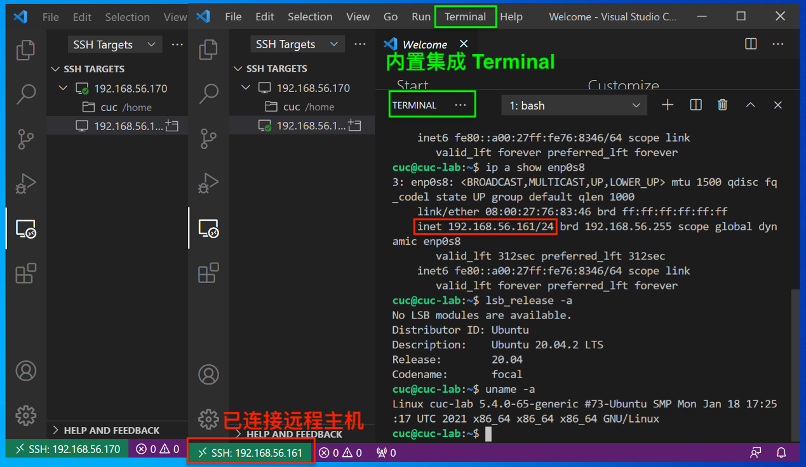
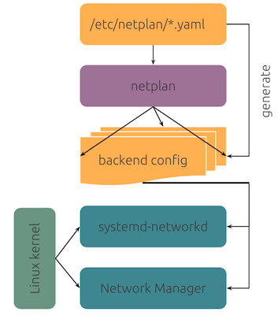

推荐但可选
git-bashSSH 服务 的当前主流 Linux 发行版本
VSCode 扩展应用商店安装 Remote
Development Extenstion Packgit-bash 配置 SSH 免密登录git-bash 配置
SSH 免密登录SSH Targetsgit bash ，输入以下指令完成 git bash
SSH 免密登录SSH 配置文件 时，选择当前用户
家目录 下 .ssh/config
用于保存远程主机配置信息VSCode 里连接新添加的远程 SSH 主机# 检查是否已经生成过 SSH 公私钥对 id_rsa.pub 和 id_rsa
ls ~/.ssh/
# 如果没有上述 2 个文件时
# 生成 RSA 算法 4096 位秘钥长度的 SSH 公私钥对
# 否则，跳过当前步骤
ssh-keygen -t rsa -b 4096
# 配置免密登录
# 假设远程主机的连接信息为 cuc@192.168.56.161
ssh-copy-id -i ~/.ssh/id_rsa.pub cuc@192.168.56.161
# 连接验证免密登录配置成功
ssh cuc@192.168.56.161
CTRL-F 在 Windows 平台的
VSCode 里是默认绑定的「打开搜索对话框」快捷键，与
vim 注册快捷键冲突node 服务进程用于响应本地
VSCode 的远程编辑与管理任务
100MB+ 内存占用，对于小内存 Linux
系统来说是一个不小的负担# 验证 vscode 远程服务进程的内存占用率
ps -o pid,user,%mem,command ax | sort -b -k3 -r | head# 开启一个tmux会话
tmux
# CTRL-B d 脱离(detach)当前tmux会话
# 再开启一个tmux会话
tmux
# CTRL-B d 再脱离(detach)当前tmux会话
# 查看当前可用的tmux会话列表
tmux ls
# 连接到会话编号0的会话
tmux attach -t 0
# 退出并关闭当前会话
exit用tmux重做上一章的ping前后台执行方式实验
# 本实验建议通过SSH远程登录到虚拟机上执行
ping www.baidu.com 2>&1 1>/dev/null &
ping www.cuc.edu.cn 2>&1 1>/dev/null &
# 注意查看输出结果，观察ping进程的父进程是谁
pstree -A
# 此时退出SSH登录
exit
# 再重新SSH登录到虚拟机上执行
# 注意查看输出结果，观察ping进程的父进程是谁，和退出SSH登录之前相比是否有变化？
pstree -A
# 开启一个tmux会话
tmux
# 重复上述实验，用后台进程方式开启新的ping进程
# 再次SSH登录到虚拟机上执行
# 注意查看输出结果，观察ping进程的父进程是谁，和退出SSH登录之前相比是否有变化？
pstree -Aid --help
id
id -g
id -u从🌰开始
$ ls -ld /tmp
drwxrwxrwt 8 root root 4096 Jan 20 15:26 /tmp
$ ls -l /usr/bin/passwd
-rwsr-xr-x 1 root root 54256 Mar 29 2016 /usr/bin/passwd
$ ls -l /etc/shadow
-rw-r----- 1 root shadow 941 Jan 16 12:37 /etc/shadow问题来了：

# 设置SUID
chmod 4755 filename
# 设置SGID
chmod 2755 dirname
# 同时设置SUID和SGID（罕见）
chmod 6755 filename
# 设置Sticky Bit
chmod 1755 dirnamecmds=(echo cd history getopts kill pwd); for cmd in "${cmds[@]}";do type -a "$cmd";done
# echo is a shell builtin
# echo is /usr/bin/echo
# echo is /bin/echo
# cd is a shell builtin
# history is a shell builtin
# getopts is a shell builtin
# kill is a shell builtin
# kill is /usr/bin/kill
# kill is /bin/kill
# pwd is a shell builtin
# pwd is /usr/bin/pwd
# pwd is /bin/pwd# 0. 使用管理员权限
sudo su -
# 1. 选择物理磁盘
lsblk
# 2. 创建分区
fdisk {{/dev/sdX}}
# 3. 在指定分区上创建文件系统
# 通过 Shell 「自动补全」功能查看当前支持的文件系统类型
# mkfs.<TAB><TAB>
mkfs -t {{ext4}} {{path/to/partition}}
# 4. 将分区挂载到指定目录
mount -t {{filesystem_type}} {{path/to/device_file}} {{path/to/target_directory}}LVM利用Linux内核的device-mapper来实现存储系统的虚拟化（系统分区独立于底层硬件）。 通过LVM，你可以实现存储空间的抽象化并在上面建立虚拟分区（virtual partitions），可以更简便地扩大和缩小分区，可以增删分区时无需担心某个硬盘上没有足够的连续空间，LVM是用来方便管理的，不会提供额外的安全保证。
# 0. 使用管理员权限
sudo su -
# 1. 选择物理磁盘
lsblk
# 2. 创建分区
gdisk {{/dev/sdX}}
# 2.1. PV 管理阶段
# 2.1.1. 在物理分区上创建 PV
pvcreate {{/dev/sdX1}}
# 查看所有可用 PV
pvs
pvscan
# 2.2. VG 管理阶段
# 2.2.1. 创建 VG
# 以下例子将 3 个物理分区加入到一个名为 ubuntu-vg 的 VG
vgcreate {{ubuntu-vg}} {{/dev/sda1}} {{/dev/sdb1}} {{/dev/sdc1}}
# 2.2.2. 从指定 VG 中移除一个 PV
vgreduce {{ubuntu-vg}} {{/dev/sdc1}}
# 2.2.3. 将一个 PV 加入到一个指定 VG 中
vgextend {{ubuntu-vg}} {{/dev/sda5}}
# 查看 VG 详细信息
vgdisplay
# 2.3. LV 阶段
# -L 指定分区大小，-n 指定逻辑分区名称
lvcreate -L 10G -n {{demo-lv}} {{ubuntu-vg}}
lvcreate -l {{100%FREE}} -n {{demo-lv}} {{ubuntu-vg}}
# 查看 LV 详细信息
lvdisplay
# --- Logical volume ---
# LV Path /dev/ubuntu-vg/demo-lv
# LV Name demo-lv
# VG Name ubuntu-vg
# LV UUID FKJDB5-KJkj-aIp1-t5BR-lp1w-68Yb-BVor5k
# LV Write Access read/write
# LV Creation host, time cuc-lab, 2021-03-19 13:36:21 +0000
# LV Status available
# # open 0
# LV Size <29.50 GiB
# Current LE 7551
# Segments 1
# Allocation inherit
# Read ahead sectors auto
# - currently set to 256
# Block device 253:1
# 3. 在指定分区上创建文件系统
# 通过 Shell 「自动补全」功能查看当前支持的文件系统类型
# mkfs.<TAB><TAB>
# 此处 {{path/to/partition}} 对应 lvdisplay 输出信息里的 LV Path 字段值
mkfs -t {{ext4}} {{path/to/partition}}
# 4. 将分区挂载到指定目录
mkdir -p {{path/to/target_directory}}
mount -t {{filesystem_type}} {{path/to/device_file}} {{path/to/target_directory}}
# 5. 调整分区大小
# 5.1. 卸载指定 LVM 分区
umount {{path/to/device_file}}
# 5.2. 检查 ext2/ext3/ext4 分区是否有损坏
e2fsck -f {{path/to/device_file}}
# 5.3. 分区扩容
lvresize --size +{{120G}} --resizefs {{volume_group}}/{{logical_volume}}
lvresize --size {{100}}%FREE {{volume_group}}/{{logical_volume}}
# 5.4. 分区缩减（可能会由于缩减后存储容量不足导致数据丢失）
lvresize --size -{{120G}} --resizefs {{volume_group}}/{{logical_volume}}这些优点使得LVM对服务器的管理非常有用，对于桌面系统管理的帮助则没有那么显著，你需要根据实际情况进行取舍。
KISS(Keep It Simple and Stupid)原则
，即“每个程序只做一件事，不要试图在单个程序中完成多个任务”，所以压缩工具只是被设计用来对单个文件进行压缩，如果要对很多文件、一个目录下所有子目录和文件进行压缩，则需要先使用打包工具对批量的文件和目录进行打包，变成一个文件之后，再将压缩任务交给专门的压缩工具软件。
KISS
设计用于「替代」经典 Linux 网络管理工具 ifupdown

/etc/netplan/*.yaml
/run/netplan/*.yaml/lib/netplan/*.yamlnetplan apply
yamllint# https://netplan.io/examples#using-dhcp-and-static-addressing
# https://netplan.io/reference
# https://github.com/CanonicalLtd/netplan/tree/master/examples
network:
version: 2
# renderer: NetworkManager
renderer: networkd
ethernets:
enp3s0:
dhcp4: true
enp5s0:
addresses:
- 10.10.10.2/24
match:
macaddress: 56:2d:d1:8e:62:17
gateway4: 10.10.10.1
nameservers:
search: [mydomain, otherdomain]
addresses: [10.10.10.1, 1.1.1.1]enp3s0
en 代表以太网卡p3s0 代表 PCI 接口的物理位置为 (3, 0),
其中横座标代表 bus，纵座标代表 slot/* http://www.freedesktop.org/wiki/Software/systemd/PredictableNetworkInterfaceNames
*
* Two character prefixes based on the type of interface:
* en — Ethernet
* ib — InfiniBand
* sl — serial line IP (slip)
* wl — wlan
* ww — wwan
*
* Type of names:
* b<number> — BCMA bus core number
* c<bus_id> — bus id of a grouped CCW or CCW device,
* with all leading zeros stripped [s390]
* o<index>[n<phys_port_name>|d<dev_port>]
* — on-board device index number
* s<slot>[f<function>][n<phys_port_name>|d<dev_port>]
* — hotplug slot index number
* x<MAC> — MAC address
* [P<domain>]p<bus>s<slot>[f<function>][n<phys_port_name>|d<dev_port>]
* — PCI geographical location
* [P<domain>]p<bus>s<slot>[f<function>][u<port>][..][c<config>][i<interface>]
* — USB port number chain
* v<slot> - VIO slot number (IBM PowerVM)
* a<vendor><model>i<instance> — Platform bus ACPI instance id
*/Most network configuration manuals still refer to ifconfig and route as the primary network configuration tools, but ifconfig is known to behave inadequately in modern network environments. They should be deprecated, but most distros still include them.
| 过时命令 net-tools | 替代命令 iproute2 |
|---|---|
| arp | ip n (ip neighbor) |
| ifconfig | ip a (ip addr), ip link, ip -s (ip -stats) |
| iwconfig | iw |
| nameif | ip link, ifrename |
| netstat | ss |
| netstat -i | ip -s link |
| netstat -r | ip route |
| netstat -g | ip maddr |
| route | ip r (ip route) |
| Linux 发行版 | 桌面版 | 服务器版 |
|---|---|---|
| Ubuntu 22.04 | NetworkManager（默认） netplan 或 systemd-networkd（可选） |
netplan（默认） NetworkManager 或 systemd-networkd（可选） |
| Debian 11 | NetworkManager（默认） ifupdown、iproute2 或 systemd-networkd（可选） |
ifupdown（默认） iproute2、NetworkManager 或 systemd-networkd（可选） |
{kind=link}